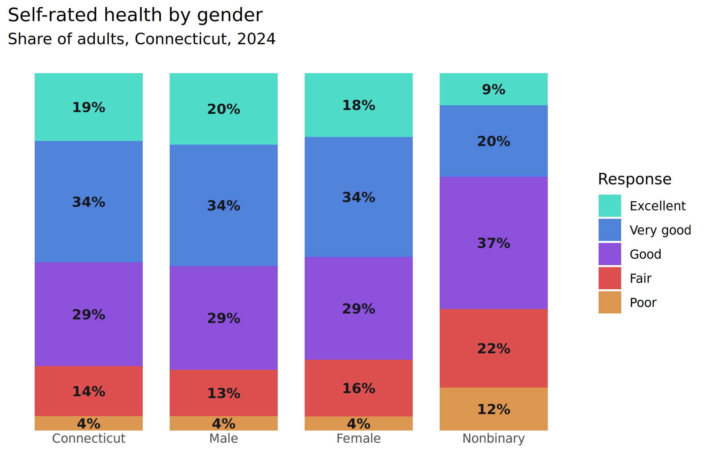
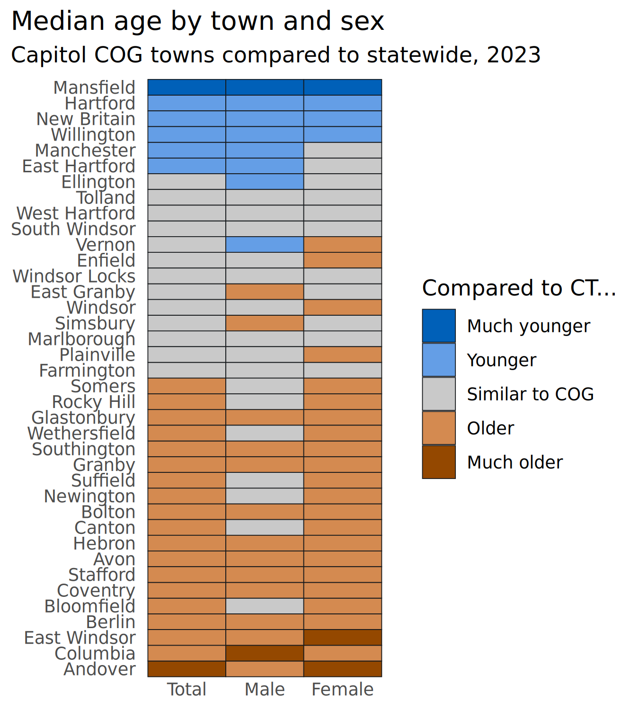

This is a roundup of many of the functions in stylehaven, giving a simplified version of some of the charts we’ve published.
Color and styling
Illustrates:
- Creating multiple weights of a font to use across all charts with
font_add_weights - Creating an array of color palettes based on a primary color
font_add_weights("Barlow Semi Condensed", semibold = 500)
#> ℹ Registering the following fonts:
#> • Barlow Semi Condensed with regular weight 400 and bold weight 700
#> • Barlow Semi Condensed Semibold with semibold weight 500 and black weight 900
base_col <- "#287FC8"
palx_colors <- palx(base_col, n_shades = 6, plot = TRUE)
qual_pal <- palx_colors[["shade04"]]
# use with offset labels to make white labels inside bars, dark gray labels outside
tf_pal <- c("TRUE" = palx_colors[["shade02"]][["gray"]], "FALSE" = "white")This is a good time to check the contrast between the colors in this palette and the dark and light colors I might use for labels. contrast_colors() helps make sure your background and text colors have enough contrast to be legible for readers with low vision. If none of the color combinations have enough contrast and verbose = TRUE, you’ll get diagnostic messages pointing you to which contrast ratios you should work to increase (there’s an example of this in the docs).
dark_gray <- unname(palx_colors[["shade01"]]["gray"]) # super dark tinted gray
contrast_colors(qual_pal,
dark = dark_gray,
light = "white",
labels_only = FALSE, plot = TRUE
)#> fill dark light max lbl_color low_contrast
#> 1 #DC50BE 5.04 3.54 5.04 #15181B FALSE
#> 2 #DC5050 4.50 3.96 4.50 #15181B FALSE
#> 3 #DC9650 7.23 2.46 7.23 #15181B FALSE
#> 4 #B4DC50 11.28 1.58 11.28 #15181B FALSE
#> 5 #50DC59 9.95 1.79 9.95 #15181B FALSE
#> 6 #50DCC8 10.53 1.69 10.53 #15181B FALSE
#> 7 #5082DC 4.72 3.77 4.72 #15181B FALSE
#> 8 #8C50DC 3.65 4.89 4.89 white FALSE
#> 9 #8997A3 5.96 2.99 5.96 #15181B FALSEAfter a bit of tweaking, all the colors in this palette have a label color that is sufficiently high-contrast.
theme_bar <- function(x, ...) {
theme_gray(base_family = "Barlow Semi Condensed") +
theme(
plot.caption.position = "plot",
plot.title.position = "plot",
strip.text = element_text(
family = "Barlow Semi Condensed Semibold",
face = "plain", hjust = 0
),
panel.background = element_rect(fill = "white", color = NULL),
axis.ticks = element_blank()
)
}
theme_set(theme_bar())
update_geom_defaults("col", list(fill = base_col))
update_geom_defaults("text", list(
size = 3.5, fontface = "bold",
family = "Barlow Semi Condensed", color = "white"
))
mini_pal <- unname(c(
palx_colors[["shade01"]]["gray"],
palx_colors[["shade03"]]["gray"],
qual_pal[c("orange", "red", "indigo", "blue", "teal")]
))I’ll keep all the plots in one named list, and all their output parameters (width & height, could also include something like logo placement) in another named list. Then I’ll map over these to save all the plots as PDF and PNG. Having a list of widths & heights also makes it easier to have the same dimensions within this document (as chunk fig-width and fig-height) as they have once they’re exported.
Facetted bar chart
Illustrates:
- Offsetting labels across multiple scales with
offset_lbls - String formatting functions
# using just last 5 colors from mini_pal
health_to_plot1 <- self_rated_health |>
group_by(response) |>
offset_lbls(value = value, thresh = 0.5, fun = percent100)
head(health_to_plot1)
#> # A tibble: 6 × 9
#> # Groups: response [5]
#> category group response value is_small off value_off just lbl
#> <fct> <fct> <fct> <dbl> <lgl> <dbl> <dbl> <dbl> <chr>
#> 1 Total Connecticut Excellent 0.19 FALSE -0.01 0.18 1 19%
#> 2 Total Connecticut Very good 0.34 FALSE -0.017 0.323 1 34%
#> 3 Total Connecticut Good 0.29 FALSE -0.0185 0.271 1 29%
#> 4 Total Connecticut Fair 0.14 FALSE -0.011 0.129 1 14%
#> 5 Total Connecticut Poor 0.04 TRUE 0.009 0.049 0 4%
#> 6 Gender Male Excellent 0.2 FALSE -0.01 0.19 1 20%
plots[["health_split"]] <- ggplot(health_to_plot1, aes(x = value, y = forcats::fct_rev(group))) +
geom_col(width = 0.8) +
geom_text(aes(label = lbl, x = value_off, hjust = just, color = is_small)) +
scale_x_barcontinuous(breaks = NULL) +
scale_color_manual(values = tf_pal, guide = guide_none()) +
facet_grid(cols = vars(forcats::fct_rev(response)), scales = "free", space = "free_x") +
theme(panel.spacing.x = unit(0.8, "lines")) +
labs(
x = NULL, y = NULL,
title = "Nonbinary adults are much less likely to report being in very good or excellent health",
subtitle = "Share of adults by gender and response to self-rated health, Connecticut, 2024"
)
plots[["health_split"]]Labeling endpoints
endpoint_lbls adds columns for labels that are offset slightly to the left for the lower limit and to the right for the upper limit, a corresponding hjust value to align left-hand labels at the end of the string and right-hand labels at the start of the string, and labels to use that include the grouping variable on one or both sides. This encourages direct labeling to wean yourself away from legends.
One thing to deal with here is the margins of the plot: You can set padding with expansion, but that changes the limits of the scale as well, so you might need to adjust your breaks. That’s easy enough for slopegraphs like this but could get annoying if you don’t know exactly what the breaks will need to be.
police_trend_to_plot <- cws_trend |>
filter(question == "police_approval") |>
endpoint_lbls(
x = year, value = value, group = group,
fun = percent100, long_side = "left"
)
head(police_trend_to_plot)
#> # A tibble: 6 × 8
#> question year category group value x just lbl
#> <fct> <dbl> <fct> <fct> <dbl> <dbl> <dbl> <chr>
#> 1 police_approval 2015 Total Connecticut 0.78 2015. 1 Connecticu…
#> 2 police_approval 2015 Total Greater New Haven 0.74 2015. 1 Greater Ne…
#> 3 police_approval 2015 Age Ages 18-34 0.69 2015. 1 Ages 18-34…
#> 4 police_approval 2015 Age Ages 35-49 0.7 2015. 1 Ages 35-49…
#> 5 police_approval 2015 Age Ages 50-64 0.77 2015. 1 Ages 50-64…
#> 6 police_approval 2015 Age Ages 65+ 0.81 2015. 1 Ages 65+: …
if (require("ggrepel")) {
ggplot(police_trend_to_plot, aes(x = year, y = value, color = group, group = group)) +
geom_path(linewidth = 3) +
geom_point(size = 4) +
# set text positions with calculated offsets
# geom_text(aes(label = lbl, x = x, hjust = just)) +
# better to use ggrepel to not overlap labels
ggrepel::geom_text_repel(aes(label = lbl, x = x, hjust = just),
seed = 10,
size = 3.5, fontface = "bold", direction = "y",
family = "Barlow Semi Condensed", box.padding = 0.15
) +
scale_x_continuous(expand = expansion(add = c(3.5, 1)), breaks = c(2015, 2024)) +
scale_y_continuous(breaks = NULL) +
scale_color_manual(values = mini_pal) +
theme(
legend.position = "none",
panel.grid.major.x = element_line(color = "gray90")
) +
labs(
x = NULL, y = NULL,
title = "Approval of police has fallen among all but the oldest adults",
subtitle = "Share of Greater New Haven adults, 2015-2024"
)
}If I want to switch sides for the long label (long_side argument in endpoint_lbls), the only thing I need to change is the padding on the x-axis—everything else is in the data frame.
For just a few lines, full labels on just the left or right is fine, but there’s also the option to add labels on both sides, which can help make more lines easier to read
Separating squished labels
Dot plots with points directly labeled are great until the values are too close together, and then it’s a pain to keep the labels from overlapping. One nice way to handle this is to calculate the distance between points on each line (whatever’s the independent variable) and offset labels that are within some threshold of any other label. The data frame this returns can be used with semi_join and anti_join to make 2 calls to geom_text/geom_text_repel. The argument thresh = 0.5 means values with a difference of 0.5 will be considered too close; this is an absolute value.
hartford_age <- median_age |>
mutate(name = forcats::as_factor(name)) |>
filter(name %in% c("Connecticut", "Capitol COG", "Hartford", "New Britain", "West Hartford"))
age_to_dodge <- hartford_age |>
dodge_lbls(x = sex, value = value, group = name, thresh = 0.5)
ggplot(hartford_age, aes(x = value, y = forcats::fct_rev(sex), color = name)) +
geom_point(size = 9, alpha = 0.9) +
# labels that don't need dodging
geom_text(aes(label = value),
data = ~ anti_join(., age_to_dodge, by = c("sex", "name")),
color = "white", size = 3.2
) +
# labels that do need dodging
ggrepel::geom_text_repel(aes(label = value),
data = ~ semi_join(., age_to_dodge, by = c("sex", "name")),
seed = 1, direction = "x", nudge_y = 0.35,
family = "Barlow Semi Condensed", fontface = "bold",
size = 3.2, show.legend = FALSE
) +
scale_color_manual(
values = mini_pal,
guide = guide_legend(override.aes = list(size = 4))
) +
scale_x_continuous(breaks = NULL) +
scale_y_discrete(labels = title_case) +
theme(panel.grid.major.y = element_line(color = "gray90")) +
labs(
x = NULL, y = NULL, color = NULL,
title = "Median age by sex",
subtitle = "Median age in years, Hartford area, 2023"
)
Stacking labels
Positioning stacked labels is often simple enough with position_stack or position_fill, but sometimes you need more tailored placement. Some reasons are making labels alongside stacked bars to replace a legend, or for situations where some values are very small and need labels to be offset. stack_lbls calculates the placement for labels at some proportion within a bar. Because this is based on cumulative sums, take care of how the data are arranged.
health_to_plot2 <- self_rated_health |>
mutate(response = forcats::fct_rev(response)) |>
arrange(group, response) |>
group_by(group) |>
mutate(stack = stack_lbls(value, fill = TRUE)) |>
ungroup()
head(health_to_plot2)
#> # A tibble: 6 × 5
#> category group response value stack
#> <fct> <fct> <fct> <dbl> <dbl>
#> 1 Total Connecticut Poor 0.04 0.02
#> 2 Total Connecticut Fair 0.14 0.11
#> 3 Total Connecticut Good 0.29 0.325
#> 4 Total Connecticut Very good 0.34 0.64
#> 5 Total Connecticut Excellent 0.19 0.905
#> 6 Gender Male Poor 0.04 0.02
plots[["health_stack"]] <- ggplot(health_to_plot2, aes(x = group, y = value, fill = response, group = group)) +
geom_col(width = 0.8, position = position_fill()) +
geom_text(aes(label = percent100(value), y = stack),
color = dark_gray
) +
scale_fill_manual(values = mini_pal[3:7], guide = guide_legend(reverse = TRUE)) +
scale_y_barcontinuous(breaks = NULL) +
labs(
x = NULL, y = NULL, fill = "Response",
title = "Self-rated health by gender",
subtitle = "Share of adults, Connecticut, 2024"
)
plots[["health_stack"]]
Those bottom bars are really small; for smaller bars or larger labels, I might offset those small ones to the side.
Standard deviation breaks
Sometimes for tables or dense grids of plots, we color things based on how many standard deviations away from a mean each value is. stdev_brks does this, either by calculating a mean or filtering for some other comparison value, like a statewide value in the data. In this case I’ll compare towns’ median ages by sex against the state’s overall median age. It’s not a very useful chart but it illustrates the function.
div_pal <- c("#0060B8", "#649EE6", "#C9C9C9", "#D48A50", "#944800")
age_std <- median_age |>
stdev_brks(
value = value,
filters = list(name = "Connecticut", sex = "total"),
labels = c("Much younger", "Younger", "Similar to COG", "Older", "Much older")
)
head(age_std)
#> # A tibble: 6 × 9
#> level county name sex value midpt sd z brk
#> <fct> <chr> <chr> <fct> <dbl> <dbl> <dbl> <dbl> <fct>
#> 1 state <NA> Connecticut total 41.2 41.2 5.16 0 Similar to COG
#> 2 state <NA> Connecticut male 39.8 41.2 5.16 -0.271 Similar to COG
#> 3 state <NA> Connecticut female 42.5 41.2 5.16 0.252 Similar to COG
#> 4 county <NA> Capitol COG total 40.2 41.2 5.16 -0.194 Similar to COG
#> 5 county <NA> Capitol COG male 38.7 41.2 5.16 -0.484 Similar to COG
#> 6 county <NA> Capitol COG female 41.7 41.2 5.16 0.0969 Similar to COG
# for simplicity, just plot Greater Bridgeport towns
plots[["age_heatmap"]] <- age_std |>
filter(county == "Capitol COG") |>
mutate(name = forcats::as_factor(name) |>
forcats::fct_reorder2(desc(sex), value)) |>
ggplot(aes(x = sex, y = name, fill = brk)) +
geom_tile(color = dark_gray) +
# rcartocolor::scale_fill_carto_d(palette = "Geyser") +
scale_fill_manual(values = div_pal) +
scale_x_discrete(labels = title_case) +
labs(
x = NULL, y = NULL, fill = "Compared to CT...",
title = "Median age by town and sex",
subtitle = "Capitol COG towns compared to statewide, 2023"
)
plots[["age_heatmap"]]
Tables & more string formatting
I’ve beefed up the string formatting functions and added a few that help with making tables, especially for HTML or narrative output. These functions plus glue are the secret behind the town equity reports’ text.
govt_to_text <- cws_trend |>
filter(year == 2024, question == "local_govt_responsive") |>
select(group, value) |>
tibble::deframe()
cat(
stringr::str_glue("> In 2024, {percent_txt(govt_to_text['Connecticut'])} of Connecticut
adults felt their local police did a good job to keep
residents safe, compared to
{percent_txt(govt_to_text['Greater New Haven'])} of
Greater New Haven adults.
{percent_eng(govt_to_text['Ages 18-34'])} of Greater
New Haven adults ages 18 to 34 reported the same.")
)In 2024, 51 percent of Connecticut adults felt their local police did a good job to keep residents safe, compared to 48 percent of Greater New Haven adults. Thirty-two percent of Greater New Haven adults ages 18 to 34 reported the same.
This is an over-engineered example of dynamically aligning table columns based on the data, but it’s helpful for bigger tables or where different versions of a table might have different sets of columns.
cws_to_tbl <- cws_trend |>
filter(year == 2024) |>
tidyr::pivot_wider(id_cols = c(category, group), names_from = question)
head(cws_to_tbl)
#> # A tibble: 6 × 5
#> category group local_govt_responsive police_approval good_parks
#> <fct> <fct> <dbl> <dbl> <dbl>
#> 1 Total Connecticut 0.51 0.72 0.74
#> 2 Total Greater New Haven 0.48 0.65 0.71
#> 3 Age Ages 18-34 0.32 0.46 0.62
#> 4 Age Ages 35-49 0.44 0.62 0.67
#> 5 Age Ages 50-64 0.52 0.72 0.74
#> 6 Age Ages 65+ 0.67 0.84 0.86
# imagine I'm not sure how many left-aligned (categorical) columns there will be,
# but I can calculate the number of right-aligned (numeric) columns based on the
# question levels
cws_align <- align_cols(
r = length(levels(cws_trend$question)),
total = ncol(cws_to_tbl)
)
cws_to_tbl |>
rename(
local_govt_is_responsive = local_govt_responsive,
approve_of_police = police_approval,
parks_in_good_condition = good_parks
) |>
rename_with(title_case) |>
mutate(across(where(is.numeric), percent100)) |>
knitr::kable(align = cws_align)| Category | Group | Local Govt Is Responsive | Approve of Police | Parks in Good Condition |
|---|---|---|---|---|
| Total | Connecticut | 51% | 72% | 74% |
| Total | Greater New Haven | 48% | 65% | 71% |
| Age | Ages 18-34 | 32% | 46% | 62% |
| Age | Ages 35-49 | 44% | 62% | 67% |
| Age | Ages 50-64 | 52% | 72% | 74% |
| Age | Ages 65+ | 67% | 84% | 86% |
Batch writing image files
Batch image functions came about after exporting thousands of plots for the equity reports, as a way to go from the above lists of plots and plot parameters and not have to think about how to write all those plots out, adding & scaling logos.
By default, this will add a logo (using stylehaven::add_logo) and adjust the height of the plot to fit so that the aspect ratio stays the same even after appending the logo to the bottom of the image.
Writing out one plot (by default, both PNG & PDF):
out_dir <- file.path(tempdir(), "plots")
if (!dir.exists(out_dir)) dir.create(out_dir)
write_plot(plots[["health_split"]],
filename = "health_split", add_logo = FALSE,
dir = out_dir,
width = plot_params[["health_split"]]$w,
height = plot_params[["health_split"]]$h
)
list.files(out_dir, recursive = TRUE)
#> [1] "pdf/health_split.pdf" "png/health_split.png"Even better, iterating over the plots and plot params to write all the plots. One thing to note here is to be careful that you’re matching plots and params if they’re in separate lists: you might get messed up if these lists are out of order, even if they’re named. (This once bothered me enough to post a question on Stack Overflow.) You can map over one list and use its names to pull entries out of the other list.
purrr::iwalk(plots, function(pl, id) {
ps <- plot_params[[id]]
write_plot(pl,
filename = id, add_logo = FALSE,
dir = out_dir, width = ps$w, height = ps$h
)
})
list.files(out_dir, recursive = TRUE)
#> [1] "pdf/age_heatmap.pdf" "pdf/health_split.pdf" "pdf/health_stack.pdf"
#> [4] "png/age_heatmap.png" "png/health_split.png" "png/health_stack.png"